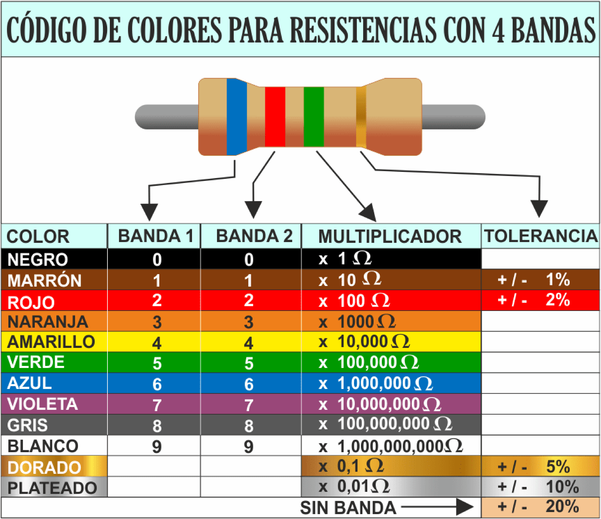
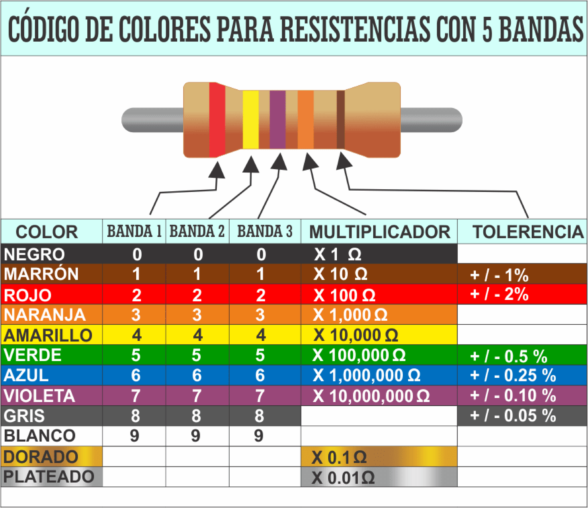

Resistencias
Dentro de los circuitos eléctricos elementales tenemos varias configuraciones que podemos realizar, cada una con una función especifica y una aplicación.
Símbolo
| Sistema NEMA | Sistema IEC |
|---|---|
Código de colores de Resistencias de carbon
Para la identificación del valor resistivo de una resistencia, se creó un código de colores para conocer e identificar su valor óhmico. Solo se verá la identificación de resistencias de 4 y 5 bandas, dado que son las más comunes que nos taparemos día a día.


Tabla de valores de resistencias comerciales
Es imposible que existan todos los valores posibles de resistencias, por ello, existe un listado de valores que se pueden conseguir en el mercado, en casos muy especiales se puede mandar a fabricar, pero para ello tenemos al potenciómetro que se puede ajustar al valor que necesitemos.


Ejemplos

Utilizando el código de colores de resistencias, obtener el valor resistivo con base a cada banda.
| Código | Valor |
|---|---|
| Naranja/Naranja/Cafe | \(330 \Omega\) |
| Rojo/Rojo/Cafe | \(220 \Omega\) |
| Amarillo/Morado/Cafe | \(470 \Omega\) |
| Negro/Cafe/Rojo | \(1000 \Omega = 1k \Omega\) |
Con base al valor resistivo, colocar el valor de las bandas a las que corresponden.
| Valor | Código |
|---|---|
| \(220 \Omega\) | Rojo/Rojo/Cafe |
| \(4.7 K \Omega\) | Amarillo/Morado/Rojo |
| \(1.2 Mk \Omega\) | Cafe/Rojo/Verde/ |
| \(10 \Omega\) | Negro/Cafe/Cafe |
Ejercicios
- Utilizando el código de colores de resistencias, obtener el valor resistivo con base a cada banda, en notación de ingeniería.
| No | Código | Valor |
|---|---|---|
| 1 | Cafe/Negro/Negro | |
| 2 | Verde/Azul/Naranja | |
| 3 | Amarillo/Morado/Rojo | |
| 4 | Azul/Gris/Amarillo | |
| 5 | Rojo/Rojo/Rojo |
- Con base al valor resistivo, colocar el valor de las bandas a las que corresponden
| No | Valor | Código |
|---|---|---|
| 1 | \(120 \Omega\) | |
| 2 | \(3.3k \Omega\) | |
| 3 | \(68k \Omega\) | |
| 4 | \(1M \Omega\) | |
| 5 | \(560 k \Omega\) |